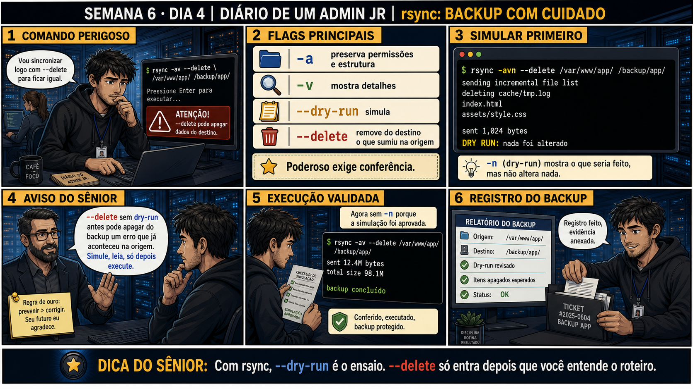

DIARIO DE UM ADMIN JR. | FASE 1 — LINUX, DO BÁSICO AO AVANÇADO
🔗 Conecta com ontem: você entendeu que backup é indispensável, mesmo com RAID.
Hoje você faz um backup de verdade com rsync — e aprende que --delete sem
--dry-run antes pode apagar do backup exatamente o que você mais precisava preservar.
🔓 Privilégio de hoje: fazer backup real com rsync, sempre simulando antes.
Você ganha autorização pra usar --delete — mas nunca sem --dry-run confirmando o que vai acontecer primeiro.
Semana 6 · Dia 4 | Nível Júnior
rsync: Backup de Verdade, Com Cuidado
com rsync, --dry-run é o ensaio; --delete só entra depois que você entende o roteiro
ANTES DE ALTERAR, OBSERVE. DEPOIS DE ALTERAR, VALIDE.

1. O chamado
Você precisa sincronizar /var/www/app/ com o destino de backup, mantendo os
dois idênticos. Seu dedo está perto do Enter num comando com --delete, mas ainda não simulou o
que ele realmente vai fazer.
💡 Passa o mouse nas palavras destacadas pra ver uma dica rápida — clica se quiser a explicação completa com analogia.
2. O sênior te conta
Quinta-feira, Semana 6
Ontem você levou pro plantão a lição de que RAID não é backup. Hoje é hora de finalmente fazer um backup
de verdade — e o ferramenta certa pra isso é rsync. Mas rsync tem uma flag que, usada sem
cuidado, apaga exatamente o que você estava tentando proteger.
Conheço bem essa história porque quase fui eu o protagonista dela. Precisava sincronizar
/var/www/app/ com um destino de backup, mantendo os dois idênticos — inclusive removendo do
backup qualquer coisa que já não existisse mais na origem. Rodei o comando com --delete,
dedo já perto do Enter, sem pensar muito. Um colega mais experiente, sentado ao lado, só perguntou:
"você já rodou com -n antes?". Travei. Não tinha.
Rodamos juntos com -n (dry-run) primeiro, e a saída mostrou uma linha que me deu um arrepio:
deleting config/producao.conf. Um arquivo de configuração de produção — que eu tinha
acidentalmente apagado da origem uma hora antes, achando que era uma cópia de teste. Se eu tivesse rodado
o --delete sem simular, esse arquivo teria sido apagado do backup também, no mesmo segundo.
As duas únicas cópias, perdidas juntas, pelo mesmo comando.
--delete faz o destino virar um espelho exato da origem — inclusive espelhando os seus
próprios erros. --dry-run existe justamente pra te dar a chance de ver esse espelho antes
dele virar realidade. Hoje você pratica esse ensaio até virar reflexo: nunca --delete sem
-n antes, sempre revisando linha por linha o que seria removido.
3. Decodificador de conceitos
Clica em qualquer termo pra ver a definição completa e uma analogia do dia a dia:
4. Ferramentas e leitura da evidência
Flag
O que observar e por que importa
-a
Preserva permissões, dono e estrutura de diretórios (modo "archive").
-n (--dry-run)
Simula a execução, mostrando o que aconteceria sem alterar nada de verdade.
--delete
Remove do destino arquivos que não existem mais na origem — poderoso e perigoso sem simulação antes.
$ rsync -avn --delete /var/www/app/ /backup/app/
sending incremental file list
deleting cache/tmp.log
index.html
assets/style.css
sent 1,024 bytes
DRY RUN: nada foi alterado
$ rsync -av --delete /var/www/app/ /backup/app/
sent 12.4M bytes
total size 98.1M
backup concluído
5. Laboratório guiado — pegue na mão, comando por comando
Resultado esperado: duas pastas criadas, uma com conteúdo, outra vazia.
Por que fizemos isso: testar rsync num ambiente descartável, isolado, é o que permite errar de propósito sem risco — inclusive testar o próprio --delete sem medo.
Cilada comum: pular direto pra um diretório real do sistema pra "economizar tempo" — sempre pratique flags destrutivas num ambiente de teste primeiro.
Ação: rode um dry-run simples, sem --delete ainda, e observe o que seria copiado.
$ rsync -avn ~/lab/origem/ ~/lab/destino/
Resultado esperado: lista de arquivos que seriam copiados, nada alterado de verdade — a mensagem "DRY RUN" confirma isso.
Por que fizemos isso: acostumar o olho a ler a saída do dry-run antes de qualquer flag mais perigosa entrar em cena.
Cilada comum: confundir dry-run "sem erro" com "já copiou" — nada foi alterado ainda, é só simulação.
Ação: rode sem -n pra copiar de verdade, depois apague um arquivo da origem (não do destino) — reproduzindo o cenário da história.
Resultado esperado: destino com os dois arquivos copiados; origem agora com só um arquivo, sem o style.css.
Por que fizemos isso: criar de propósito o cenário "arquivo sumiu da origem" é o que te deixa pronto pra reconhecer esse padrão numa saída de dry-run real.
Cilada comum: esquecer qual arquivo você apagou de propósito — anote antes, pra depois conseguir confirmar se o dry-run mostrou exatamente o esperado.
🧑🏫 Aqui entra o Mentor (em breve): se a saída do --delete parecer confusa ou inesperada, este é o ponto onde o chat com o Sênior-IA vai ajudar a interpretar.
Ação: rode o dry-run com --delete e confirme que ele mostra exatamente o arquivo removido sendo apagado do destino também.
Resultado esperado: linha "deleting style.css" aparecendo no dry-run, exatamente o arquivo que você removeu no passo anterior — nada ainda alterado de verdade.
Por que fizemos isso: essa é a revisão que teria salvo a história do config/producao.conf — ver a linha "deleting" ANTES dela acontecer de verdade.
Cilada comum: ver "deleting" e entrar em pânico automático — a revisão existe pra confirmar se aquela remoção É esperada, não pra cancelar tudo por reflexo.
Ação: confirme que a remoção é esperada, rode sem -n pra aplicar de verdade, e documente o resultado.
Resultado esperado: destino agora espelha exatamente a origem (sem style.css), reproduzindo o painel 6 da prancha de hoje.
Por que fizemos isso: documentar origem, destino e o que foi removido é o que transforma "rodei um comando" em "fiz um backup profissional e rastreável".
Cilada comum: aplicar o --delete de verdade sem ter revisado o dry-run linha por linha antes — a revisão não é opcional só porque o comando "parece" certo.
6. Antes de ver as opções — tenta responder
🧠 Recall ativo: o que a flag --delete do rsync realmente faz, e por que ela exige
tanto cuidado?
--delete
faz o destino virar um espelho EXATO da origem — inclusive removendo do backup qualquer arquivo que já
não exista mais na origem, mesmo que essa ausência tenha sido um erro seu.
--dry-run
mostra isso ANTES de acontecer de verdade — sempre simule primeiro.
QUESTÃO 1 de 3
7. Questão comentada — clica numa alternativa
Você precisa sincronizar a origem com o backup usando --delete, mantendo os dois
idênticos. Qual é a sequência correta e segura?
💡 Analogia do Sênior para Fixar: O comando 'rsync -avz' é como o pintor que só repinta os pedaços descascados da parede: compara os arquivos de origem e destino e só transfere os blocos que realmente mudaram.
QUESTÃO 2 de 3 — cenário de erro real
7.1 O dry-run mostra "deleting cache/tmp.log" — isso é esperado?
O dry-run revela que cache/tmp.log seria removido do backup, porque esse arquivo não
existe mais na origem.
Qual é a atitude correta antes de prosseguir com o backup real?
💡 Analogia do Sênior para Fixar: A flag '--delete' no rsync é o espelho fiel: se um arquivo foi apagado na origem, ele é removido do backup para que a cópia não vire um depósito de lixo acumulado.
QUESTÃO 3 de 3 — detalhe que confunde todo iniciante
7.2 "rsync sem -a já preserva tudo igual, o -a é só opcional?"
Um colega roda rsync origem/ destino/, sem a flag -a, achando que o resultado
seria idêntico.
Essa suposição está correta?
💡 Analogia do Sênior para Fixar: A flag '--dry-run' (-n) é o ensaio geral do teatro: simula toda a cópia no terminal e mostra o que seria alterado sem mover um único byte real no disco.
8. Procedimento profissional
Sempre rode com -n (dry-run) primeiro, especialmente com --delete envolvido.
Revise linha por linha o que seria alterado ou removido.
Confirme que cada remoção prevista é realmente esperada.
Só então rode sem o -n, executando o backup real.
Documente origem, destino, tamanho transferido e confirmação de sucesso.
Prevenção
Crie um alias ou script wrapper de equipe (ex.: safe-rsync) que sempre roda o
dry-run primeiro, pausa pra confirmação manual, e só então executa sem -n. Isso remove a possibilidade de
esquecer o ensaio, mesmo sob pressão de um chamado urgente.
9. Validação e encerramento
--dry-run foi usado antes de qualquer execução com --delete.
Cada remoção prevista foi revisada e confirmada como esperada.
-a foi usado pra preservar permissões e metadados corretamente.
O backup foi documentado com origem, destino e resultado.
Rollback e limites
Depois que --delete roda de verdade (sem -n), os arquivos removidos do destino
não voltam — não existe rollback além de um backup anterior desse próprio backup. É exatamente por isso que
o dry-run nunca é opcional.
💡 Sobre repetição espaçada: "simule antes de executar de verdade" conecta
com sed sem -i (Semana 8, se você já viu) e com o ritual de rm da Semana 2 — a mesma disciplina de ensaio
antes da ação real. O Anki vai conectar os três.
10. Resposta final
Alternativa correta: B. Nesta aula, a decisão correta foi rodar
rsync -avn --delete primeiro (dry-run), revisar o que seria apagado, e só então rodar sem o -n. O ponto
central do caso é este: com rsync, --dry-run é o ensaio — --delete só entra depois que você entende o
roteiro completo.
🔓 O que você desbloqueou hoje
Capacidade de fazer backup real com rsync, sempre simulando antes de qualquer
ação destrutiva. Amanhã fecha a Semana 6 e a Fase 1 de storage: restaurar de verdade, provando que o backup
realmente funciona.